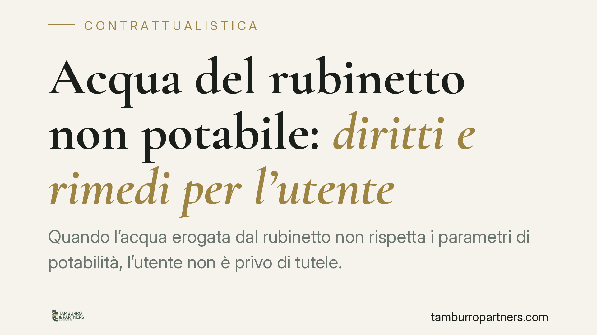

Acqua del rubinetto non potabile: diritti e rimedi per l'utente
Quando l'acqua erogata dal rubinetto non rispetta i parametri di potabilità, l'utente non è privo di tutele. Tra obblighi del gestore, ordinanze sindacali e possibili conseguenze sul contratto di somministrazione, è utile capire cosa prevede la normativa e quali strumenti concreti esistono per reagire, senza illudersi che il risarcimento sia automatico.

Il fatto e perché conta
Ricevere in casa acqua non potabile è un disservizio che tocca un bene essenziale. Può derivare da inquinamento della falda, guasti alla rete, superamento dei valori di parametri chimici o microbiologici. In questi casi entra tipicamente in gioco un'ordinanza sindacale che vieta l'uso potabile dell'acqua, spesso su segnalazione dell'Autorità sanitaria (ASL).
Dal punto di vista giuridico si intrecciano due piani: quello pubblicistico, legato alla sicurezza sanitaria e ai controlli, e quello privatistico, legato al contratto di somministrazione idrica che lega l'utente al gestore del servizio.
Inquadramento normativo
La disciplina di riferimento sulla qualità delle acque destinate al consumo umano è oggi contenuta nel d.lgs. n. 18/2023, che ha recepito la direttiva UE 2020/2184 e ha sostituito il precedente d.lgs. n. 31/2001. È un passaggio importante: articoli e pubblicazioni che citano ancora il d.lgs. 31/2001 come testo vigente non tengono conto dell'aggiornamento normativo. Il d.lgs. 18/2023 fissa i valori di parametro, gli obblighi di controllo e le responsabilità di gestori e Autorità sanitarie.
Sul piano contrattuale, il rapporto tra utente e gestore è riconducibile alla somministrazione (artt. 1559 e seguenti del codice civile): un contratto con cui una parte si obbliga a eseguire prestazioni periodiche o continuative di una cosa. La somministrazione ha una disciplina propria e non coincide con la compravendita.
Proprio per questo va usata cautela con il richiamo automatico al regime dei vizi della cosa venduta (art. 1495 c.c.). Quell'estensione richiederebbe un'argomentazione analogica non scontata. Il baricentro più solido resta l'inadempimento contrattuale ex art. 1453 c.c.: se il gestore eroga acqua non conforme ai parametri di potabilità, la prestazione è inesatta e l'utente può chiedere l'adempimento, la risoluzione e comunque il risarcimento del danno.
Implicazioni pratiche
Per l'utente occorre distinguere due esiti diversi.
Il primo è il riequilibrio del corrispettivo: se per un periodo l'acqua non è utilizzabile per uso potabile, il pagamento della bolletta a fronte di una prestazione non integralmente resa può essere contestato, con richiesta di riduzione o rimborso della quota corrispondente.
Il secondo è il danno risarcibile in senso proprio (spese sostenute per l'acquisto di acqua alternativa, eventuali danni alla salute). Qui vale una regola essenziale: il risarcimento non è automatico. Chi lo pretende deve provare l'esistenza del danno, il suo ammontare e il nesso con l'erogazione non conforme. La sola ordinanza che vieta l'uso potabile prova il disservizio, non il danno concreto subito dal singolo.
Attenzione anche ai tempi. Il diritto al risarcimento da inadempimento è soggetto alla prescrizione ordinaria decennale (art. 2946 c.c.), che è cosa diversa dagli eventuali termini di decadenza per la denuncia dei vizi previsti in altri contesti contrattuali. Confondere prescrizione e decadenza è un errore che può pregiudicare la pretesa.
Gli orientamenti dei giudici di merito, in materia, tendono a riconoscere tutele quando il disservizio è documentato e il danno è provato; per la loro citazione puntuale si rinvia alla verifica caso per caso delle pronunce aggiornate.
Cosa fare in concreto
- Documentare tutto. Conservare l'ordinanza sindacale, gli avvisi del gestore, gli esiti delle analisi dell'ASL e le comunicazioni ricevute. La prova documentale è la base di ogni pretesa.
- Conservare le prove di spesa. Scontrini e fatture per l'acquisto di acqua imbottigliata o per soluzioni alternative servono a quantificare il danno.
- Inviare un reclamo scritto al gestore. Contestare formalmente il disservizio, chiedere la riduzione o il rimborso della quota di bolletta relativa al periodo interessato e fissare un termine di riscontro.
- Rivolgersi all'Autorità competente in caso di silenzio. In mancanza di risposta adeguata è possibile attivare le procedure di conciliazione e i canali di reclamo previsti per il servizio idrico.
- Valutare l'azione con un professionista prima di agire in giudizio. Va verificata la sussistenza del danno, la sua quantificazione e la tenuta probatoria: sono elementi che incidono sull'esito e vanno esaminati in concreto.
La tutela dell'utente ha un fondamento normativo chiaro, ma il suo esito dipende dalla qualità delle prove raccolte e dalla corretta impostazione della richiesta.
---
*Contributo informativo a cura di Tamburro & Partners - Avv. Giuseppe Tamburro. Non costituisce parere legale.*
Ogni contratto ha il suo equilibrio.
Se vuoi una revisione delle clausole o una redazione su misura, scrivi allo studio. Ti rispondiamo entro un giorno lavorativo.